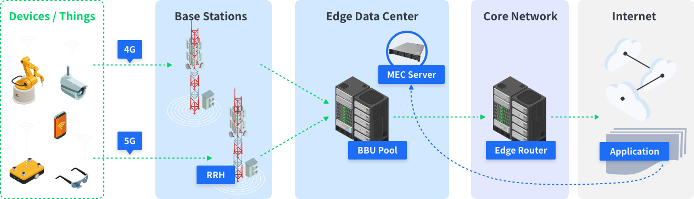

Why you need MEC?
The number of IoT devices and services are increasing rapidly and these terminal devices are difficult to manage in the local area.
During years, softwares and hardware infrastructures are becoming complicated and it’s hard to update at one step.
Expert's practical experiences need to be digitally inherited and fasten data driven decision making to face future challenges.
Feature
01
Multi- dimensions for converged softwares and hardwares
- Provide an one-stop integrated platform for various machine vision demand scenarios.
- Avoid redundant hardware investment for different machine vision services.
02
High-speed experiences in response to the 5G era
- Construct a stable, high-speed and low-latency packet transmission architecture.
- Provide a secure structure for privacy with edge computing on private clouds.
- Integrate multi-access through 5G, 4G/LTE, WiFi, Ethernet.
03
One-stop platform to manage intuitively
- Pre-integrated IoT security applications to protect the security of IoT devices, traffic channels, and all applications.
Our MEC Solution What is MEC?
×
Multi-access edge computing (MEC)
-An ETSI-defined network architecture concept.
-Enables cloud computing capabilities and an IT service environment at the edge of the
cellular network.

Enable your AIoT applications deploy fast on edge computing structure
In order to assist the enterprises cope with the whole latest market challenges, Perobot
launched customized solutions which was based on Foxconn’s CAEP(Converged Access Edge
Platform),
CAEP equips with machine vision applications that horizontally integrate people,
vehicles,
components, and things to provide enterprises’ software and hardware integration
requirements.
CAEP not only simplifies the process of applications deployment to the edge which is
based on an
open standard structure and mainstream virtualized techniques, but also controls the
investment
costs effectively and adds value to existing services.